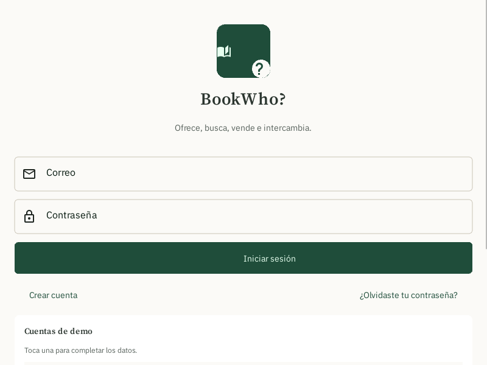
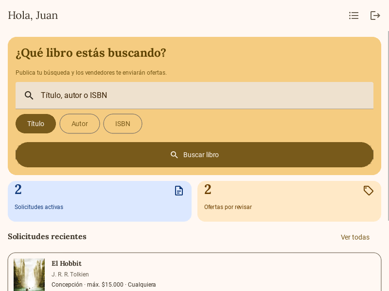
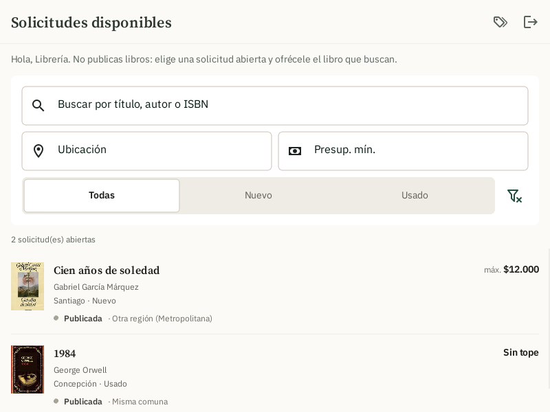
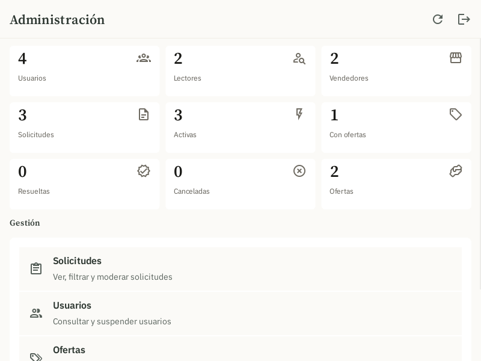

BookWho? da vuelta el marketplace de libros de segunda mano: en vez de recorrer catálogos que casi nunca tienen lo que buscas, publicas tu búsqueda y son los vendedores quienes te responden con una oferta.

El problema
Un libro agotado, descatalogado o de segunda mano obliga hoy a recorrer tienda por tienda o grupo por grupo de compraventa, sin ninguna garantía de encontrarlo. El lector hace todo el trabajo de búsqueda, y la mayoría de las veces no encuentra nada.
En vez de un catálogo que el lector debe revisar, el lector publica lo que busca y son los vendedores los que responden si lo tienen. El vendedor tampoco necesita mantener un catálogo público: solo contesta cuando alguien pide justo lo que él puede ofrecer.
Cómo funciona
El mismo circuito se repite para cada libro: publicar, ofertar, coordinar.
Busca el libro en una API externa, indica precio máximo, condición aceptada, comuna y preferencia de entrega.
Ve las solicitudes abiertas (con la cercanía a su comuna), y si tiene el libro, oferta precio, condición y datos de contacto.
Revisa las ofertas y acepta una para coordinar: en ese momento ve el contacto del vendedor. Cuando la compra se concreta, confirma el trato. La entrega ocurre fuera de la app.
Funcionalidades
Google Books → Open Library → catálogo local, con caché de portadas en disco para que nunca se vean vacías.
Máquina de estados completa: publicada, con ofertas, en coordinación, resuelta o cancelada, con reglas de negocio en el dominio, no en la interfaz.
Al aceptar una oferta las demás quedan en espera, no se pierden: si el trato se desiste, vuelven a estar activas.
El vendedor ve si una solicitud es de su misma comuna, región u otra región, sin exponer la dirección real de nadie.
Cada acción se revalida en el dominio: un lector no puede tocar solicitudes de otro, un vendedor no puede cancelar ofertas ajenas.
Métricas, gestión de usuarios y solicitudes, moderación con motivo registrado, y auditoría exportable a un archivo de log.
Capturas



Tecnología
Estado del proyecto